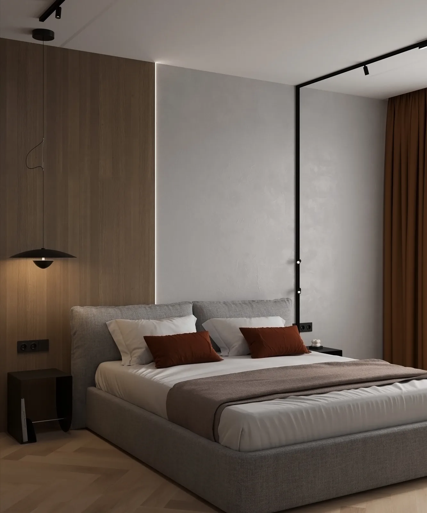

Дизайн интерьера · Inspira Design
Продуманные
интерьеры
для вашей жизни
Пространство, в котором эстетика
работает на ваш комфорт,
а детали имеют смысл.
Для себя.Посмотреть проекты ↓

Тишина в деталях.Комфорт каждый день.
О студии
Красивый интерьер
начинается с того,
как вы живёте
Где вы пьёте утренний кофе, как принимаете гостей, что хотите видеть из спальни. Сначала — ваши привычки. Затем — планировка, материалы и свет.
В Inspira Design мы собираем эти решения в цельное пространство: понятное, удобное и близкое именно вам.
Как строится работа ↗- Погружаемся
в вашу задачу - Соединяем эстетику
и ежедневный комфорт - Продумываем материалы,
хранение и освещение - Сопровождаем путь
от идеи к реализации
Направления работы
Выберите свой формат
От пространства для жизни до подготовки
недвижимости к продаже. У каждого
формата — своя задача и свои решения.
Портфолио
Пространство в деталях
Материалы, свет и пропорции.
Посмотрите интерьеры ближе —
нажмите на понравившуюся работу.
Подборка визуализаций интерьеров Inspira Design.
Как мы работаем
От идеи до реализации
Понятная последовательность решений.
На каждом этапе согласуем результат,
прежде чем двигаться дальше.
- 01
Знакомство
Обсуждаем образ жизни, пожелания и бюджет.
- 02
Планировка
Продумываем зонирование, проходы и хранение.
- 03
Концепция
Выбираем настроение, материалы, цвет и свет.
- 04
Документация
Готовим чертежи и спецификации для реализации.
- 05
Сопровождение
Обсуждаем комплектацию и участие в реализации.
Сколько стоит дизайн-проект?
Стоимость зависит от площади, состояния объекта и состава работ. Опишите задачу — обсудим подходящий формат и подготовим расчёт.
Что входит в дизайн-проект под ключ?
Планировочное решение, концепция, визуализации, рабочие чертежи и подбор материалов. Точный состав фиксируем до начала работы.
Сколько длится работа над проектом?
Срок зависит от площади, сложности и времени согласования. Этапы и календарный план определяем после знакомства с объектом.
Можно работать удалённо?
Возможность удалённой работы обсуждаем индивидуально. Для старта нужны план помещения, фотографии и ваши пожелания.
Можно заказать отдельную услугу?
Да, можно обсудить планировку, концепцию или подготовку объекта к продаже отдельно. Напишите, какая помощь нужна.
Начнём со знакомства
Обсудим
ваш проект?
Расскажите о пространстве и своих планах.
Соберём короткий бриф для первого разговора.